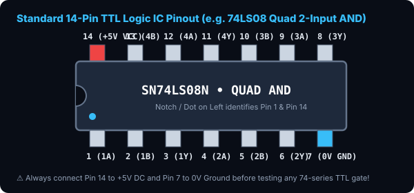
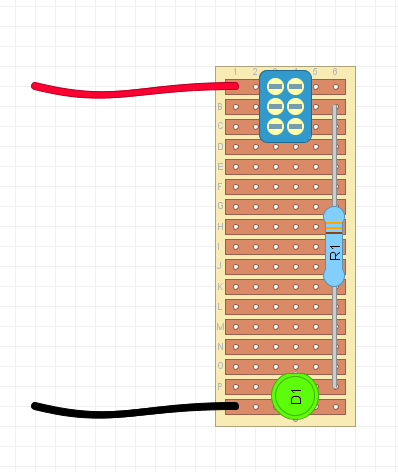

Week 1: Digital Launch – “Can You Build the Decision?”
📘 Knowledge (K)
- Digital electronics fundamentals & binary number systems ($0$ and $1$)
- Logic gate functions, truth tables & Boolean expressions
- TTL and CMOS technologies & logic voltage thresholds
- Common TTL 74-series logic ICs & basic soldering principles
🛠️ Skills (S)
- Technical research & reading 74-series IC datasheets
- Circuit simulation (Multisim) & stripboard layout planning (DIYLC)
- Breadboard & stripboard assembly, soldering & electrical measurement
- Visual inspection, fault finding, testing, verification & documentation
🎯 Behaviours (B)
- Safe working practices & professional workshop conduct
- Attention to detail & evidence-based decision making
- Team working & collaborative problem solving
- Engineering documentation & workplace professionalism
Engineering Toolbox: Bridging Analogue to Digital Control Systems
Industrial control systems rely heavily on digital decision making. Modern control systems, industrial automation equipment, electronics manufacturing, and embedded systems all rely on digital logic and electronic assembly skills.
Engineers must interpret logic diagrams, select components correctly, verify circuits, and document their work accurately when commissioning equipment, maintaining machinery, or developing embedded systems:
In Part 4 today, you will solder an LED switching circuit powered by a $V_S = 5.0\,\text{V}$ supply. If the LED forward voltage is $V_F = 2.0\,\text{V}$ and target current is $I_F = 20\,\text{mA}$ ($0.02\,\text{A}$), calculate the minimum series resistance in Ohms ($\Omega$): $$R = \frac{V_S - V_F}{I_F}$$
🔮 Cumulative Retrieval 2: Transistor Switching (Week 3)
In Week 3, you operated a BJT transistor as a switch. Which two operating regions correspond to binary OFF ($0$) and ON ($1$)?
🔮 Cumulative Retrieval 3: Op-Amp Comparator (Week 4)
In Week 4, an open-loop comparator compared a sensor voltage against a reference and swung its output to either $+V_{\text{sat}}$ or $0\,\text{V}$. What kind of signal is that output?
Part 1: Introduction to Digital Electronics
While analogue circuits process continuous signals, digital electronics allows machines to make decisions using two binary states:
Today we explore the building blocks of digital decision-making: logic gates packaged in TTL and CMOS Integrated Circuits (ICs):
| Feature | TTL (74LSxx Series) | CMOS (4000 / 74HCxx) |
|---|---|---|
| Full Name | Transistor-Transistor Logic | Complementary Metal-Oxide-Semiconductor |
| Internal Tech | Bipolar Junction Transistors (BJTs) | MOSFET Transistors (Field-Effect) |
| Supply ($V_{CC}$) | Fixed $+5.0\,\text{V} \pm 0.25\,\text{V}$ | Wide range: $+3\,\text{V}$ to $+15\,\text{V}$ |
| Logic Thresholds | LOW $\le 0.8\,\text{V}$ • HIGH $\ge 2.0\,\text{V}$ | LOW $\le 30\%\,V_{DD}$ • HIGH $\ge 70\%\,V_{DD}$ |
| Bench Handling | Robust; floating inputs read HIGH | Very low power; ESD static sensitive! |

Interactive Animated Logic Gate & Truth Table Explorer
Toggle Inputs A and B on the left to observe changing inputs and outputs:
| Input A | Input B | Output Y | Output State |
|---|
A packaging machine should only start when all 3 conditions are satisfied ($Y = A \cdot B \cdot C$):
Part 2: Logic Gate Investigation Challenge (A3 Mind Map)
Working in pairs, create an A3 Logic Gate Mind Map covering all 6 gates: AND, OR, NOT, NAND, NOR, and XOR.
“Engineers do not memorise everything. Instead, they learn how to find and use technical information effectively.” Use the technical reference below:
• Boolean Expression: $Y = A \cdot B$
• IC:
74LS08• Description: Output is HIGH only when all inputs are HIGH.
• Application: Machine safety interlock.
As you research, identify:
• Gates available in TTL logic families
• Universal gates (NAND & NOR)
• Real industrial uses
Part 3: Multisim Investigation (Simulate 1 Gate of Your Choice)
Because we have a 10-minute window before the Careers Talk, choose ONE logic gate of your choice (for example, one from below) to build and test in Multisim:
- Place interactive switches on the gate input(s).
- Add an LED indicator on the output.
- Test all input combinations for your chosen gate.
- Verify that the output matches its truth table.
🔮 Pre-Simulation Check: Unconnected TTL Inputs
In Multisim (and real breadboards), what happens if you leave a TTL input pin floating (disconnected from ground) when a switch is open?
Intermission: Careers & Employability Talk
Explore how your electronics engineering training connects to real industry pathways:
In your own personal notebook or Portfolio of Evidence (no personal data is collected on this page), record:
Part 4: Practical Workshop – Stripboard Soldering Activity
Before engineers can build complex digital systems, they must be able to assemble circuits safely and accurately. Today you will build a simple LED switching circuit using stripboard where the switch controls whether the LED is ON or OFF:
Before touching the soldering iron, you must design the circuit. Create a stripboard layout showing: Power rails, SPDT switch, Resistor, and LED.
Why? Professional engineers always design before building. A good design: Reduces mistakes, Saves materials, and Makes fault finding easier.
Before assembly: Show your DIYLC design to your lecturer. Approval must be received before construction begins.
- ✅ Wear safety glasses
- ✅ Handle hot soldering irons carefully
- ✅ Return irons to their stands
- ✅ Keep your work area tidy
- ✅ Report any faulty equipment immediately
- ✅ Follow lecturer instructions
- ❌ Leave a hot iron unattended
- ❌ Touch the soldering tip
- ❌ Swing cables or tools
- ❌ Solder without permission

Part 4: Stripboard Assembly, Soldering & Inspection/Testing
Step 4 — Identify and insert components according to your design:
- LED polarity: Long leg = Anode (+); Short leg / flat edge = Cathode (−).
- Resistor value: Check colour bands / DMM reading before inserting.
- SPDT switch terminals: Align pins cleanly with stripboard rows.
- 🛑 Ask for a visual inspection before soldering.
Step 5 — Solder all component connections:
• ✅ Shiny joints
• ✅ Clean joints
• ✅ Correct component placement
• ❌ Cold joints
• ❌ Excess solder
• ❌ Solder bridges
🔮 Pre-Power Troubleshooting Check: Solder Bridges
What happens if excess solder accidentally bridges across Track P and Track Q underneath LED $D_1$?
Inspect your board before powering the circuit using $5\,\text{V}$:
Power the circuit using 5V and verify:
| Test Condition ($5\,\text{V}$ Supply) | Expected LED State | Observed Result |
|---|---|---|
| Switch Position 1 | LED OFF ($0\,\text{V}$) | |
| Switch Position 2 | Correct LED Operation (ON) |
Assignment (Complete Before Next Lesson): Reading & Watch
Read the sections covering Digital signals, Logic levels, Boolean logic, Logic gates, and Integrated circuits:
1. What is digital electronics?
2. What is the difference between analogue and digital signals?
3. What do logic 0 and logic 1 represent?
4. What is a logic gate?
5. Give one industrial application of digital electronics.
Watch the Introduction to Logic Gates videos and make notes on Binary states (0 and 1), Logic gates, Real-world applications, and Decision making in control systems:
What is binary?
What is a logic 0?
What is a logic 1?
What is an AND gate used for?
What is a NOT gate used for?
Assignment: Truth Tables, Microsoft Forms Quiz & Reflection
Use the course page animations (Slide 4 Simulator) and compare against the truth table in Wikipedia: Logic Gates:
| Gate | Which Input Combinations Produce Logic 1? | Check |
|---|---|---|
| AND | Pending | |
| OR | Pending | |
| XOR | Pending |
A packaging machine should only start when: Guard door is closed ($A = 1$), Emergency stop is released ($B = 1$), and Air pressure is available ($C = 1$).
In your notebook, write a short paragraph explaining: How could digital electronics decide whether the machine should start, and which logic gate would be most suitable? Be prepared to discuss your answer at the start of the next lesson.
💡 Check Key Engineering Points for Next Lesson's Discussion
74LS08 IC) implements the Boolean equation $Y = A \cdot B \cdot C$, ensuring the motor enable output $Y$ is HIGH ($1$) only when all three safety conditions are simultaneously satisfied.
Complete the Digital Electronics quiz and achieve at least 70%. Instant feedback is provided and you may attempt the quiz multiple times. Be prepared to explain your answers during class discussion.
- What numerical values are used in binary?
- What output does an AND gate produce if both inputs are HIGH?
- Which gate inverts a signal?
- What is the purpose of a truth table?
- What does CMOS stand for?
- What does TTL stand for?
- Logic states, Gate symbols & Basic truth tables
Engineer Exit Ticket: Digital Launch Verification
Verify your understanding before leaving the workshop and completing your post-session Microsoft Forms Quiz:
Which 74-series TTL integrated circuit number contains four 2-input AND gates ($Y = A \cdot B$)?
A packaging machine must only start when Guard Door is closed ($1$), E-Stop is released ($1$), AND Air Pressure is available ($1$). Which logic gate type is required?
Ensure your stripboard soldering station is powered down, iron returned to its stand, and complete the Unit 19 Digital Electronics Microsoft Forms Quiz ($\ge 70\%$) before next week's Combinational Logic lab!